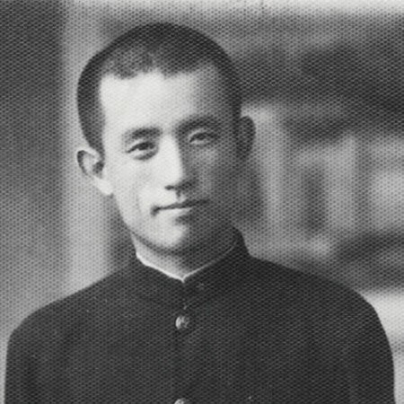
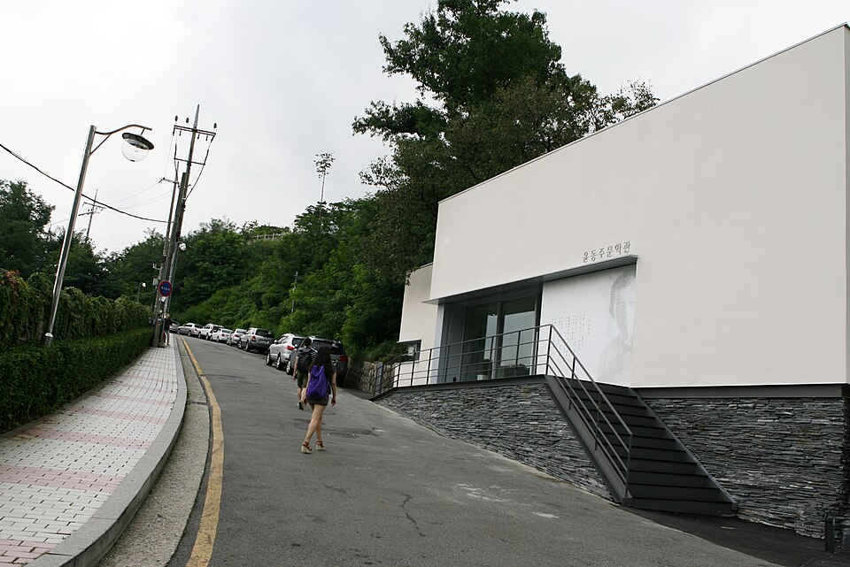
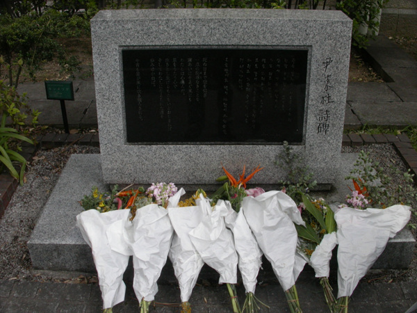

⏱️ 10초 카드 · 식민지 조선·저항시 (1917~1945)
부끄러움〈서시〉후쿠오카 옥사
여는 질문 — 총을 들지 않은 것도 저항일 수 있을까?
이름
한국어윤동주
원어尹東柱
실제 발음윤동주
로마자Yun Dong-ju
영어권Yun Dong-ju
왜 이 사람인가
이 도감에서 윤동주는 '조용한 저항'을 보여 줘요. 안중근이 총으로 맞섰다면, 윤동주는 '부끄러움'이라는 감정으로 시대의 아픔을 노래했죠. 나라를 잃은 시대에 아무것도 하지 못하는 자신을 부끄러워하는 마음 — 그 정직함이 오히려 가장 단단한 저항이었어요. 안네 프랑크처럼, 그는 글로 자신을 남기고 전쟁이 끝나기 직전에 세상을 떠났어요.
생애
북간도에서 태어나 별과 하늘을 사랑한 시인이에요. 〈서시〉의 '죽는 날까지 하늘을 우러러 한 점 부끄럼이 없기를'이라는 구절은 지금도 많은 사람의 마음을 울려요.
그의 시는 총칼로 싸우는 대신, <b>부끄러움</b>이라는 조용한 감정으로 시대의 아픔을 말했어요. 나라를 잃은 시대에 아무것도 못 하는 자신을 부끄러워하는 마음 — 그것이 오히려 가장 정직한 저항이었죠.
일본 유학 중 독립운동에 가담했다는 혐의로 체포되어, 광복을 불과 6개월 앞둔 1945년 2월 후쿠오카 형무소에서 스물일곱의 나이로 세상을 떠났어요. 그의 시집 〈하늘과 바람과 별과 시〉는 광복 뒤에야 세상에 나왔어요.
자료로 보기 — 유묵·사진



남긴 말
“죽는 날까지 하늘을 우러러 / 한 점 부끄럼이 없기를.”
대표작 〈서시〉의 첫 구절 — 그의 삶 전체를 요약하는 다짐이에요. · 출처: 윤동주 〈서시〉 (1941)
“인생은 살기 어렵다는데 / 시가 이렇게 쉽게 씌어지는 것은 / 부끄러운 일이다.”
일본 유학 중 쓴 시 — 편하게 시를 쓰는 자신조차 부끄러워한, '부끄러움'의 정수예요. · 출처: 윤동주 〈쉽게 씌어진 시〉 (1942)
연표
- 1917북간도 명동촌 출생
- 1941〈서시〉 등 집필 (연희전문 졸업 무렵)
- 1943일본 유학 중 독립운동 혐의로 체포
- 1945.2후쿠오카 형무소에서 옥사 (광복 6개월 전)
생애의 길 — 북간도에서 후쿠오카까지 🗺️
별을 노래하던 고향에서 서울로, 일본 유학으로, 그리고 형무소로. 번호를 차례로 눌러 보세요.
현재 지도 위 경로예요. 별이 가득하던 북간도에서 출발해, 빛을 6개월 앞둔 차가운 형무소에서 길이 끊겼어요 — 그러나 그가 숨겨 둔 시는 끝내 살아남아 우리에게 닿았죠.
빛과 그림자총을 들지 않은 저항도 저항이에요. '부끄러움을 아는 마음'이야말로 어둠 속에서 사람을 사람으로 지켜 주는 힘이라는 걸, 그의 시가 보여 줘요.
더 깊이 (고등·일반)
별을 사랑한 북간도의 청년
윤동주는 만주 북간도의 명동촌에서 태어났어요. 우리말로 시를 쓰는 일조차 점점 어려워지던 시대에, 그는 별과 하늘과 바람을 노래하며 맑은 우리말 시를 써 내려갔죠. 〈별 헤는 밤〉처럼, 그의 시에는 멀리 두고 온 고향과 그리운 이름들이 별빛처럼 담겨 있어요.
참고: 윤동주의 생애·작품 일반
'부끄러움'이라는 저항
윤동주의 시가 특별한 건, 누구를 미워하거나 큰소리로 외치는 대신 '부끄러움'을 말한다는 점이에요. 나라를 잃었는데 아무것도 못 하는 자신, 편하게 공부하고 시를 쓰는 자신을 그는 끊임없이 돌아보며 부끄러워했죠. 그 정직한 자기 성찰이, 시대의 어둠에 물들지 않으려는 가장 조용하고 단단한 저항이었어요.
참고: 윤동주 시의 주제 일반
창씨개명과 유학 — 흔들리는 시대
일본 유학을 가려면 이름을 일본식으로 바꿔야 했어요(창씨개명). 윤동주도 그 강요를 피하지 못했고, 그 직전에 쓴 시에 깊은 괴로움을 남겼죠. 개인의 힘으로 거스를 수 없는 시대의 압력 앞에서, 그는 시로써 자신의 양심을 붙들었어요.
참고: 창씨개명·윤동주 유학 일반
후쿠오카, 1945 — 광복 6개월 전
교토에서 유학하던 윤동주는 1943년 독립운동에 가담했다는 혐의로 체포돼 후쿠오카 형무소에 갇혔어요. 그리고 광복을 불과 6개월 앞둔 1945년 2월, 스물일곱의 나이로 옥중에서 숨졌죠. 정확한 사인은 지금도 의문이 남아, 형무소에서 이름 모를 주사를 맞았다는 증언도 있어요.
참고: 윤동주의 체포·옥사(1945) 일반
광복 뒤에야 세상에 나온 시
윤동주는 살아서 시집을 내지 못했어요. 그의 시들은 친구가 숨겨 지킨 원고로 남았다가, 광복 뒤인 1948년 『하늘과 바람과 별과 시』라는 유고 시집으로 세상에 나왔죠. 죽은 뒤에야 사람들에게 닿은 그의 시는, 지금 한국인이 가장 사랑하는 시가 됐어요.
참고: 『하늘과 바람과 별과 시』(1948) 일반
사람의 그물 — 함께 읽을 인물
이 인물이 나오는 이야기
더 공부하기 — 여기서 출발하세요
📚 책으로
- 하늘과 바람과 별과 시 ↗ · 윤동주광복 뒤에야 세상에 나온 그의 유고 시집 — 〈서시〉가 실려 있어요.
- 윤동주 평전 ↗ · 송우혜시인의 삶과 죽음을 꼼꼼히 좇은 표준 평전.
📜 1차 사료
- 〈서시〉·〈별 헤는 밤〉·〈쉽게 씌어진 시〉부끄러움과 그리움을 노래한 대표작들 — 지금은 누구나 읽을 수 있어요.
🎬 영상으로
- 영화 〈동주〉 메인 예고편 (이준익, 2016) ↗🟢 강하늘이 윤동주를 연기한 영화 — 배급사 플러스엠 공식 예고편(한국어).
📍 가 볼 곳
- 윤동주 문학관 (서울 청운동)옛 수도가압장을 고쳐 만든, 시인을 기리는 작은 문학관.
- 도시샤대학 윤동주 시비 (교토)그가 유학한 대학에 세워진 〈서시〉 시비.